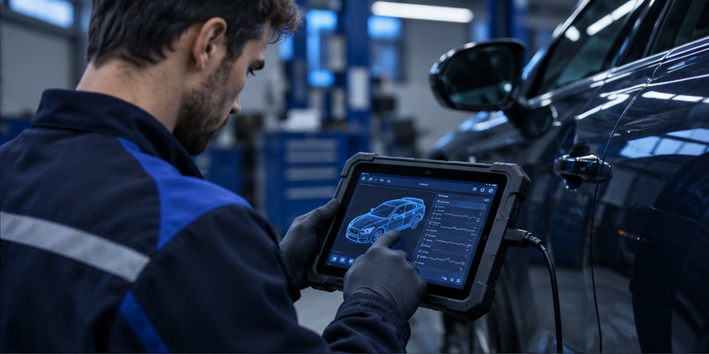

Диагностика и ремонт · Иркутск
Когда машина подаёт сигнал
Загорелся индикатор, появился стук или автомобиль тянет в сторону? Опишите, когда это происходит, и согласуйте время диагностики.
Что происходит с машиной?
Выберите знакомый симптом. Подскажем, с чего начать разговор с мастером.
Горит индикатор
Компьютерная диагностика и автоэлектрика. Назовите индикатор и опишите, когда он загорелся.
Шумит или уводит
Ремонт ходовой, развал-схождение, замена колодок. Расскажите, проявляется ли это при торможении, повороте или на неровностях.
Подошло время ТО
Уточните замену масла, шиномонтаж или другие работы по регламенту вашей машины.

Что пригодится при записи
Назовите марку, модель и год выпуска. Если есть фото индикатора или запись звука, приложите их к сообщению.
Уточнить время визитаСмартур · Иркутск
Челябинская улица, 26/2
Пн–пт 09:00–19:00 · Сб–вс 09:00–18:00